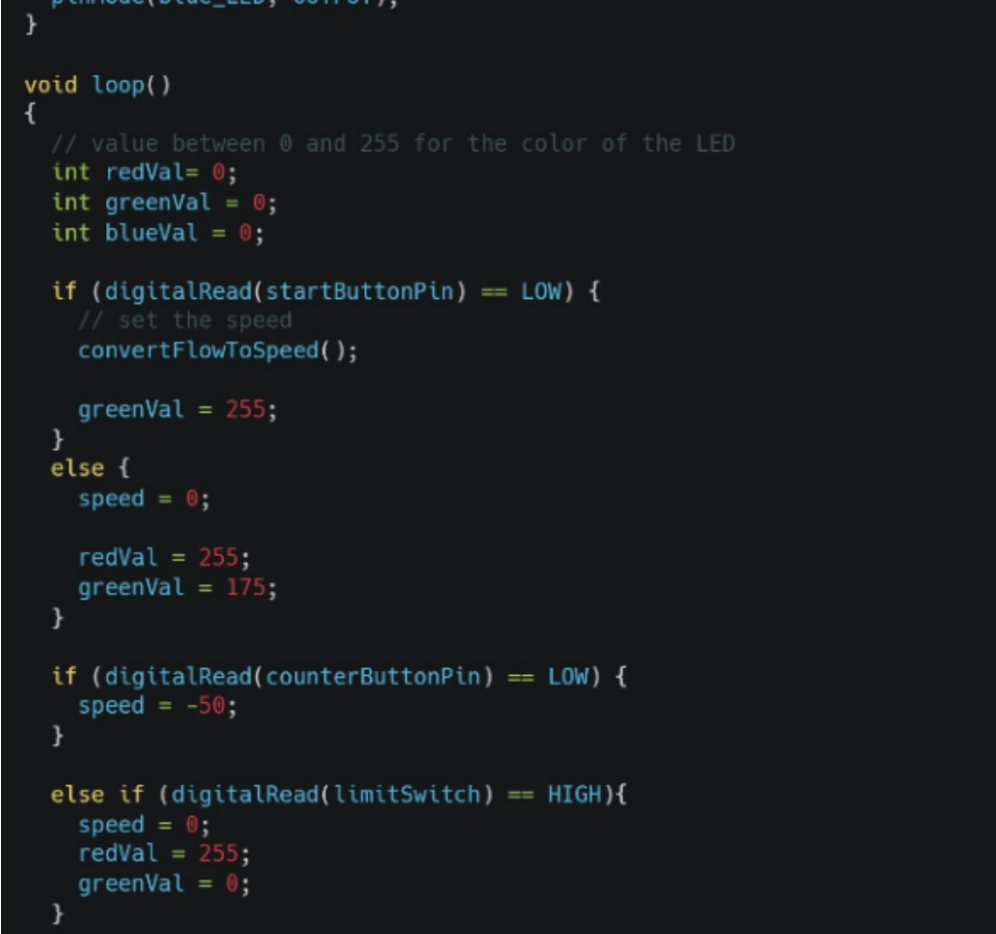
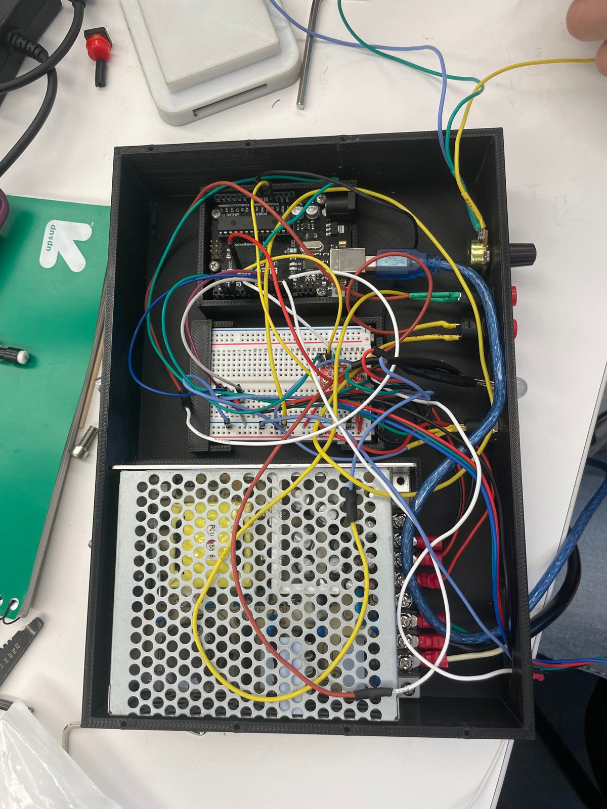

Linear Actuator Syringe Pump
My Role
This project was the culmination of a semester of learning digital fabrication skills, and consisted of a team of 3 and I. The entire pump was essentially built from the ground up, consisting of CAD, circuit design, soldering, programming, and testing. I helped with all aspects of design, but most specifically, these were my focuses:
-
Designed the circuitry and wiring to the microcontroller
-
CAD and 3D printing for the enclosure
-
Calculations and testing for flow rate and accuracy metrics
CAD Considerations

To collaborate most efficiently in our group of four, we used Fusion 360 and heavily parameterized each element. It was important to use "clean" CAD practices so that tech transfer would be seamless between team members. The assembly was important for recognizing mechanical and spatial concerns before we spent time printing each part.
Videos of Functional Prototype

Programming
Pressing the latching push button turns the LED green, initiating motion, and releasing it turns the LED yellow, halting motion. The limit switch, triggered when the syringe is empty, stops the motor, turning the LED red. Non-latching push buttons control the syringe pump: the left button moves the syringe to the starting position for refilling, and the right button empties the syringe at a constant rate. My calculations for converting flow rate to a motor speed are included in the code.
Photo of Circuit
